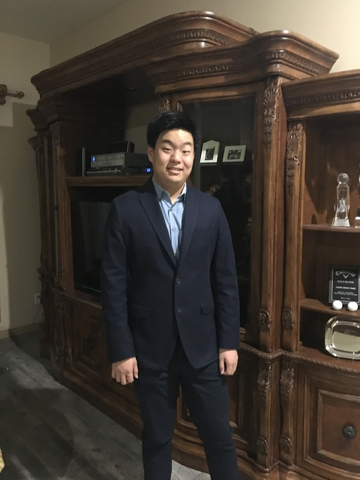

|  |
As I progressed with my life, I have learned to realize my love for technology and computers, as I find it fitting for a future job career. I spend a lot of my time doing something on the computer, therefore I would be interested in dwelling into the career field designated for it. To achieve such a goal, I would have to try multiple technological or computer classes to see what I prefer the most, whether it be from programing to informational sciences. Although I may not know specifics on what kind of career I want yet, the reason why I consider going into the computer career path is due to my utter enjoyment with using computers. One characteristic that I possess is my labor-intensive work style. I have worked under such stressful and work-intensive environments that have not only been evident in school, but also under other settings of work as well. I could prove that I will finish any task that is necessary, such as projects or tasks under the technological field. Another experience that I can offer is being a helpful person, sacrificing my time to assist others. Whether it be from volunteering in The First Tee or helping out adults with their technology, I offer my help whenever I can. In high school, I have accomplished some achievements. I am ranked top 10% in the school, being in 45th place. I have passed 4 AP tests, which are World History, Seminar, US History, and Language and Composition. Onto activities, I was the group leader of The Media Center, a community of gamers in PDHS, hosted by the former librarian tech Mr. Barbuzza. With his assistance and motivation, I was able to congregate a stable community of people with a similar liking, which is video games. From the experience of leading The Media Center, I learned how to effectively create plans for people. I was ready to initiate something that would interest an audience. With my public speaking skills and improv entertainment being latched into my brain, I was able to communicate to a wide audience. I learned that I have gained a significant amount of satisfaction from leading such a successful de facto club. What I have learned is that with a little innovation to begin something just a few friends wanted, it could lead to much greater and grander events. I have also participated in theater performances, being in two plays. My first play was "The Seagull" and my second one was a One Act Play, "The Suessification of a Midsummer's Night Dream". Thank you for reading the about me section of my page. Spend some time on my website. |
|---|